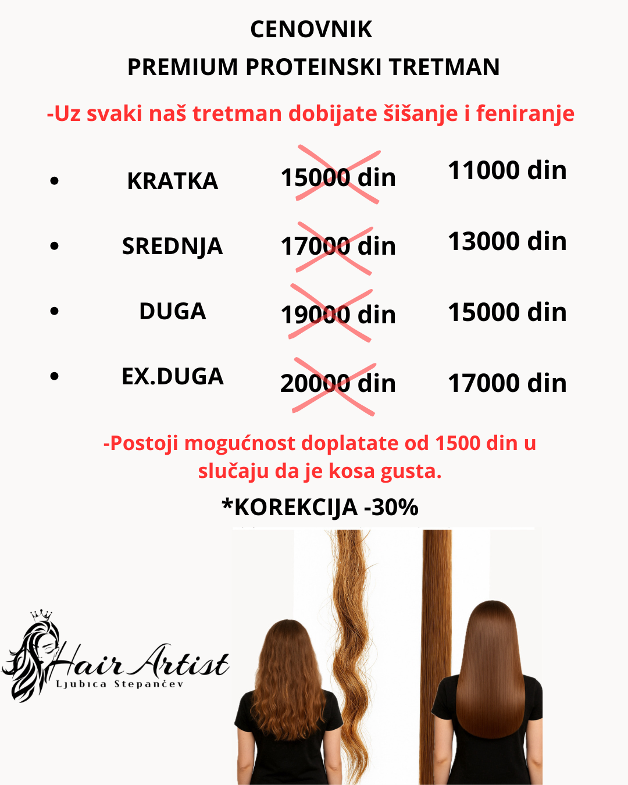
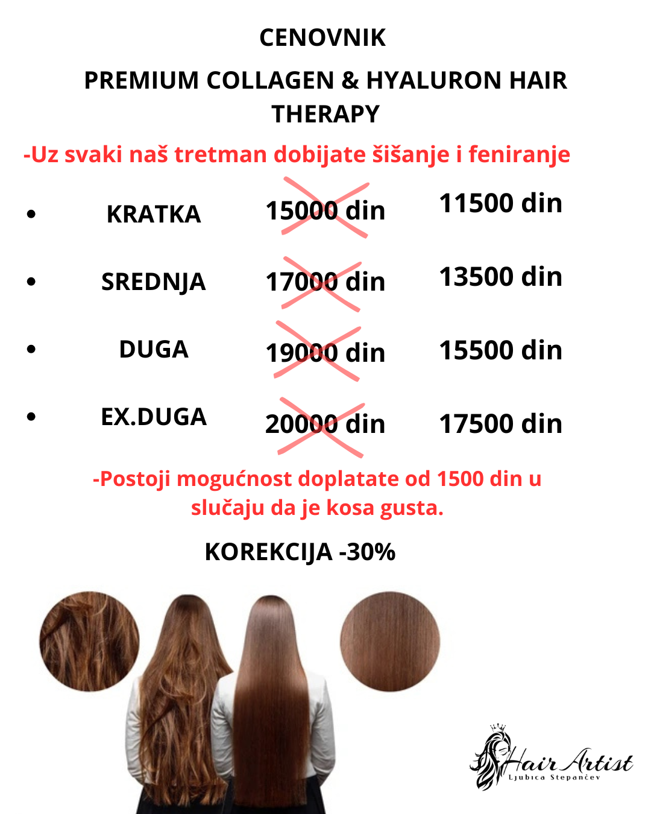

CENOVNIK TRETMANA
Kako odabrati adekvatan tretman :
PROTEINSKI TRETMAN
Kada želiš dugoročnije ispravljanje + obnovu i hidrataciju (bez formaldehida).
Efekat: ravna, jaka i obnovljena kosa do 12 meseci.Collagen & Hyaluron
Za suvu, oštećenu i neukrotivu kosu.
Efekat: sjajna i zaglađena kosa uz dubinsku negu.Nano dubinska obnova
Tretman za obnovu i hidrataciju bez ispravljanja.
Može se raditi češće, u zavisnosti od oštećenja.Laminacija kose
Za obnovu, hidrataciju i sjaj.
Ne ispravlja kosu. Radi se na svaka 3 meseca.Scalp & Detox
Dubinsko čišćenje kože glave i uklanjanje nečistoća.
Preporučuje se 2-3 puta godišnje.
PROTEINSKI TRETMAN (ORGANSKI)
Dubinska obnova + savršeno ispravljanje kose
Samo sa jednim tretmanom dobijate dubinski oporavljenu, svilenkasto meku, sjajnu i ravnu kosu.
Silk Protein tretman je profesionalni proteinski ispravljač koji istovremeno obnavlja unutrašnju strukturu dlake i pruža savršeno zaglađivanje – bez oštećenja i bez formaldehida.
Kako deluje?
- Proteini svile i tanini popunjavaju oštećene delove dlake i obnavljaju je iznutra.
- Kosa postaje potpuno ravna, bez kovrdžanja i frizza.
- Vraća snagu, elastičnost i daje staklasti sjaj.
- Skraćuje vreme feniranja i stilizovanja do 80%.
- Štiti kosu od temperature i spoljašnjih uticaja.
- Efekat traje do 12 meseci uz pravilnu negu.
Za koga je idealan?
- Za hemijski tretiranu, suvu ili beživotnu kosu.
- Za one koje žele dugotrajno ispravljanje.
- Za kosu koja se teško stilizuje i brzo mrsi.
Doplata za gustinu: 1500 din

PREMIUM COLLAGEN & HYALURON HAIR THERAPY
Dubinska obnova – intenzivna hidratacija – dugotrajno zaglađivanje
Luksuzni tretman za kosu koja je suva, oštećena, bez sjaja ili nedefinisana.
Namenjen svima koji žele svilenkastu, glatku, disciplinovanu i dubinski obnovljenu kosu. Rezultati su vidljivi odmah nakon tretmana.
Kako deluje?
- Kolagen – jača unutrašnju strukturu vlasi i vraća elastičnost.
- Hijaluronska kiselina – zadržava vlagu unutar dlake i pruža intenzivnu hidrataciju.
- Nutritivna ulja i proteini – zatvaraju kutikulu i obnavljaju oštećenu dlaku.
Rezultat
- Vidljivo smanjenje naduvenosti i frizza.
- Dugotrajna mekoća i hidratacija.
- Obnovljena, glatka i sjajna kosa.
- Jednostavnije i brže stilizovanje.
NANO DUBINSKA OBNOVA KOSE
Inovativna nanotehnologija za dubinsku obnovu kose
Za sve dame koje vole negovanu i sjajnu kosu.
Nano tretman je jedan od najefikasnijih salonskih tretmana za obnovu kose. Nano aparat omogućava dubinsko unošenje aktivnih sastojaka u dlaku uz pomoć nanočestica.
Rezultati su vidljivi odmah nakon prvog tretmana. Ponavljanje zavisi od trenutnog oštećenja kose.
Ovo nije ispravljač — kosa neće biti potpuno ravna samo sušenjem. Nakon tretmana kosa je obnovljena, popunjena, hidrirana i sjajna.
Uz svaki nano tretman dobijate skraćivanje krajeva i feniranje (nije obavezno).
*Ako želite zaglađivanje i ravnu kosu, idealan izbor je Premium Collagen & Hyaluron ili Premium Proteinski tretman.
CENOVNIK NANO DUBINSKE OBNOVE
✓ Uz svaki tretman dobijate skraćivanje krajeva i feniranje.
CENOVNIK LAMINACIJA KOSE
✓ Uz tretman dobijate skraćivanje krajeva i feniranje (nije obavezno).
K/H LAMINACIJA KOSE
Luksuzni tretman za ogledalski sjaj i zaštitu kose.
Laminacija kose obavija vlas zaštitnim, svilenkastim filmom, čineći kosu mekšom, sjajnijom i otpornijom na spoljašnje uticaje i promene temperature.
Često se kombinuje sa farbanjem za dodatni zdrav sjaj i punoću. Tretman se aktivira toplotom, zatvara kutikulu i napaja vlas proteinima koji jačaju dlaku.
Kako deluje?
- Snabdeva vlas proteinima koji daju punoću i tonus.
- Zatvara proteine i formira zaštitni „staklasti“ film.
- Oporavlja dlaku spolja i iznutra.
Rezultati tretmana
- Meka, glatka i svilenkasta kosa.
- Intenzivan ogledalski sjaj.
- Veća elastičnost dlake.
- Hidrirana i puna vlas.
- Smanjeno pucanje krajeva.
- Bez frizz efekta i manje mršenja.
- Lakše rasčešljavanje.
SCALP & HAIR DETOX TRETMAN
Zdravlje kose počinje od temena.
Ovaj tretman dubinski čisti i revitalizuje teme, uklanja nečistoće, višak masnoće i ostatke proizvoda, dok istovremeno hrani i obnavlja dlaku od korena do vrhova.
Nakon tretmana, kosa je vidljivo osvežena, lagana, meka i blistava, a teme potpuno balansirano i smireno.
Pravilnom detoksikacijom temena oslobađaju se folikuli i podstiče se zdrav rast kose, dok bogati hranljivi sastojci vraćaju elastičnost i hidrataciju čak i najsuvljim i oštećenim vlasima.
Zašto je ovaj tretman važan?
Vlasište, baš kao i koža lica, nakuplja ostatke proizvoda, višak sebuma, mrtve ćelije i toksine iz okoline.
Ako se ne čisti redovno, folikuli se zapuše, što može dovesti do sporijeg rasta, peruti, svraba i prekomernog mašćenja.
Scalp detox tretman dubinski čisti i osvežava teme, stimuliše cirkulaciju, oslobađa koren i omogućava kosi da raste zdravo i snažno.
Relaksacija & masaža
Tokom tretmana radi se blaga, opuštajuća masaža vlasišta koja ne samo da pruža osećaj potpune relaksacije, već i stimuliše cirkulaciju i bolji protok hranljivih materija do folikula kose.
Masaža pomaže da aktivni sastojci iz tretmana prodru dublje u kožu glave, smanjuje napetost, poboljšava dotok kiseonika i dodatno podstiče rast zdrave i jake kose.
Ovaj spoj luksuzne nege i relaksacije čini tretman pravim spa ritualom za kosu i teme.
SCALP DETOX
✓ Uz tretman dobijate šišanje i feniranje.
Kupi kućni scalp masažer